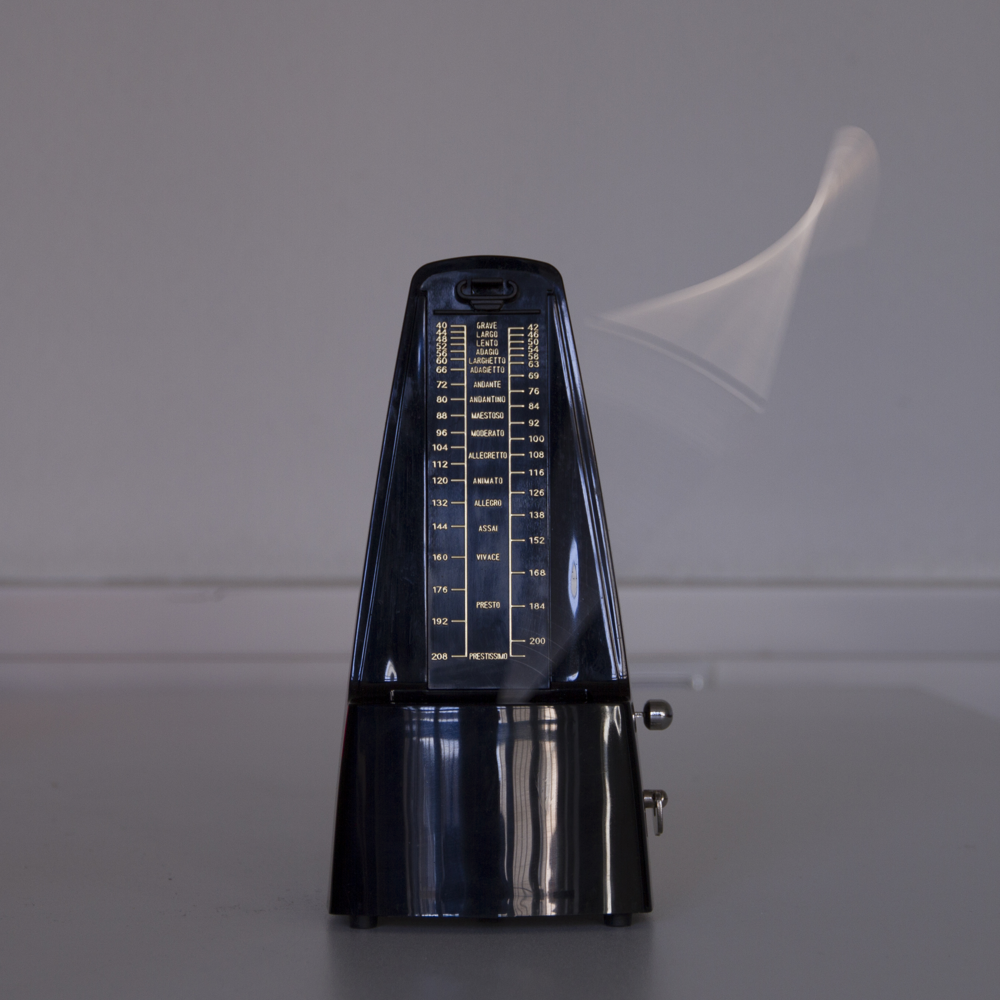

Metrotonom
Ist ein Metronom, an dessen Pendel ein weiteres Pendel angebracht ist und durch welches das erstere aus seinem regelmäßigen Gang gebracht wird. Ein Pendel in Kombination mit einer Hemmung und einem Antrieb (wie man es aus der klassischen Pendeluhr kennt) schafft einen gleichmäßigen Takt. Dieses Funktionsprinzip, wird bei Metrotonom durch ein weiteres Pendel ausgehebelt und verursacht minimale Abweichungen aus der Regelmäßigkeit.

Metrotonom, Maurits Boettger